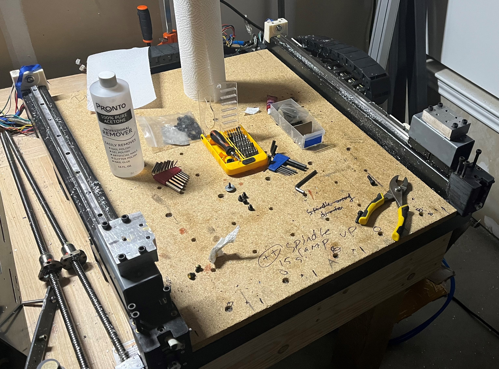

This project started with something called the PrintNC Mini.
The PrintNC Mini is a CNC machine that starts life as a pile of steel tubing and 3D printed parts. The printed parts are then replaced with parts you machine on the CNC itself.

Here is the base frame bolted together (minus two additional cross members, which were added later). Unfortunately, I didn't get a picture of it on my kitchen countertop while my wife and I cooked dinner. The quartz countertop is the flattest surface in my house, and I used it as a reference while shimming the linear rails.

If you look closely at the design, you'll notice that the entire gantry of this "3D printed" CNC machine is built from bolted steel tubing and linear rails, with a relatively short load path to ground. The 3D printed components are mainly motor mounts and accessories, which shouldn't affect the machine's rigidity much, especially once they are replaced with aluminum. That, along with its thoroughly parametric CAD, is why I chose this machine over the alternatives.

This is where the bootstrapping begins. With the frame assembled and the electronics routed, it was time to start cutting aluminum! I won't go into the wiring here, because I don't want to relive debugging the electronics. It took me days to discover that with SPI communication, cables longer than a few millimeters cause timeouts at high data rates. I still don't fully understand SPI, but I do know that I hate it.

The first toolpath was finished, and the surface finish was... crunchy. To cut the aluminum faceplate, I was relying on a 3D printed faceplate that barely limped through the operation. In my opinion, it is the one component where bootstrapping was a questionable decision: it is far too weak, and I had to baby it to keep it from vibrating to pieces. Once the aluminum version was installed, cut quality went way up, and so did my confidence.


The thin layer of grease and aluminum chips covering the machine made it much more fun to work on.

And there we have it: a mostly functional CNC router!
Just for fun, here are some images from my first real project on this machine: my take on a slim wallet.